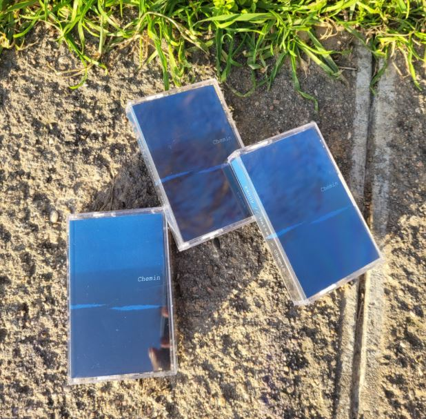
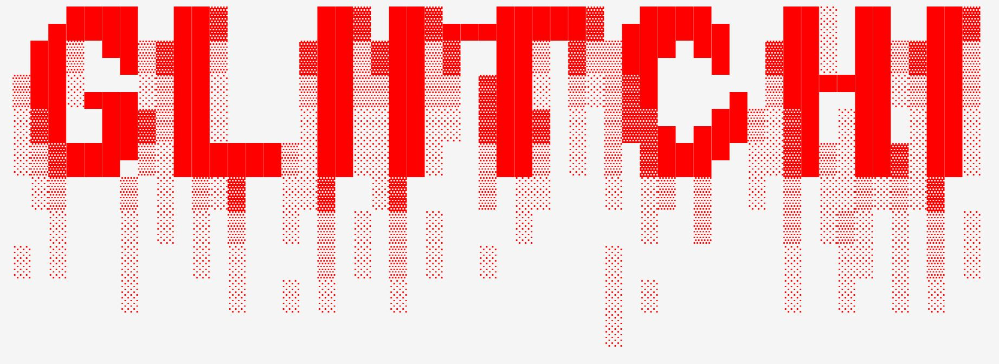
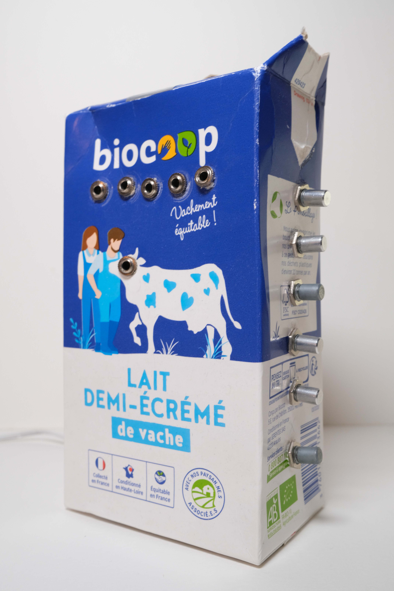
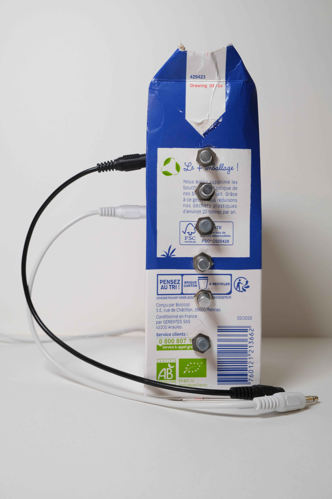
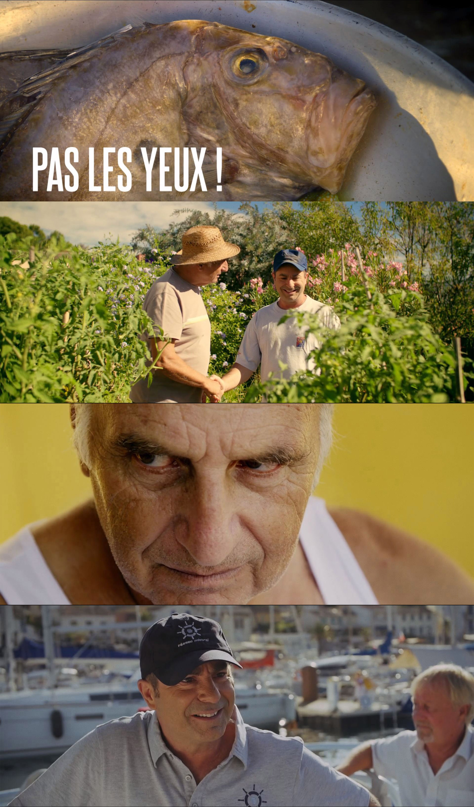

-

Perso/Organisation/Performance_Live_03/22
Pro/Mastering/Cassette_CheminPour_CutterSansLame_01/22
Perso/Plug-in/GlitchEffects_Plug-incodé_en_Faust_01/22
Perso/Live/The_Longest_NightWinter_Solstice_MarathonTidalCycles_Cycle#82 _12/21
Perso/Compo/Vibralgo_demo_11/21 Composition Live coding sur TidalCycles + Contrôle temps-réel Yamaha TX7 au travers de Puredata avec capteurs en OSC
Perso/Compo/Secular_Moog_06/21
Perso/Compo/Interférences_Suite_05/21
Perso/Capsule/Papet_04/21
Perso/Podcast/JEAN-LUC_03/21
 Perso/Création/Synthé-Demi-Écrémé_12/20

Perso/Court-Métrage/Réalisation_12/20
Pro/SoundDesign/Bruitages_12/20
Pro/Court-Métrage/Chef-Op-Son_11/20
Pro/SoundDesign/Bruitages_10/20

Perso/PerformancesLive_03-06/20
Pro/AmbianceSonore_7/19